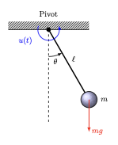
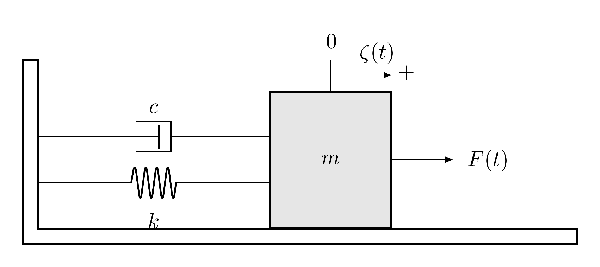
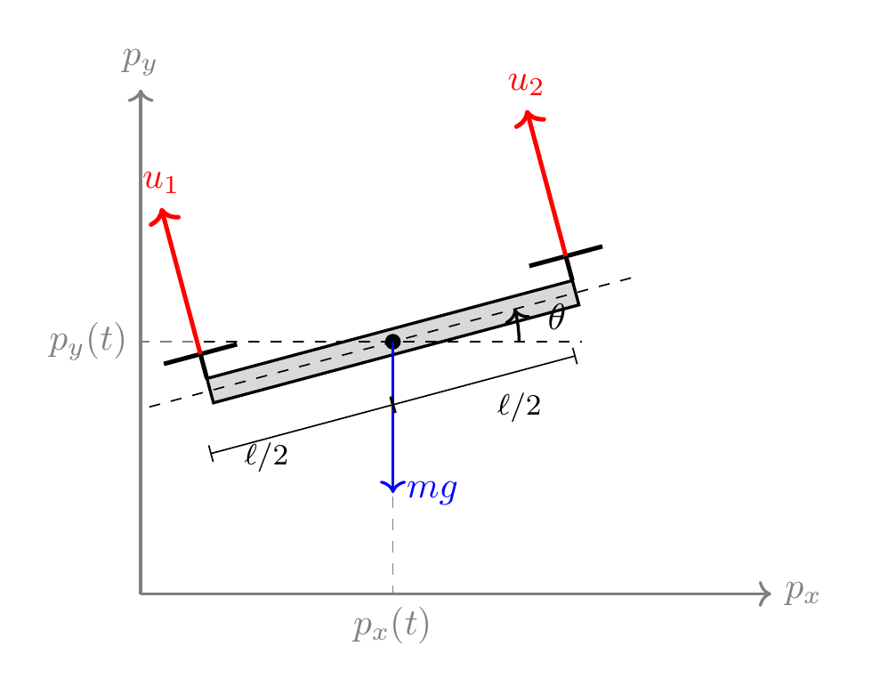
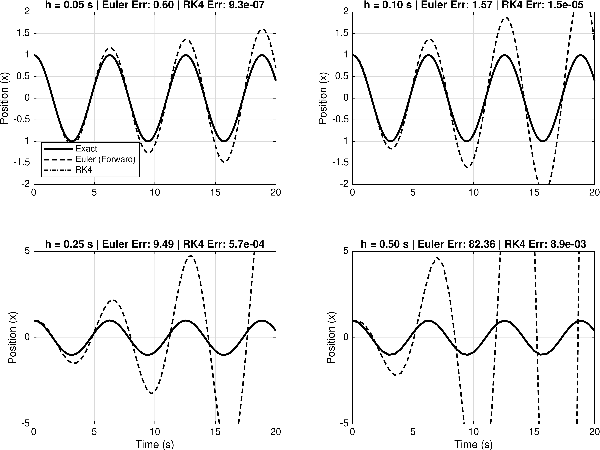
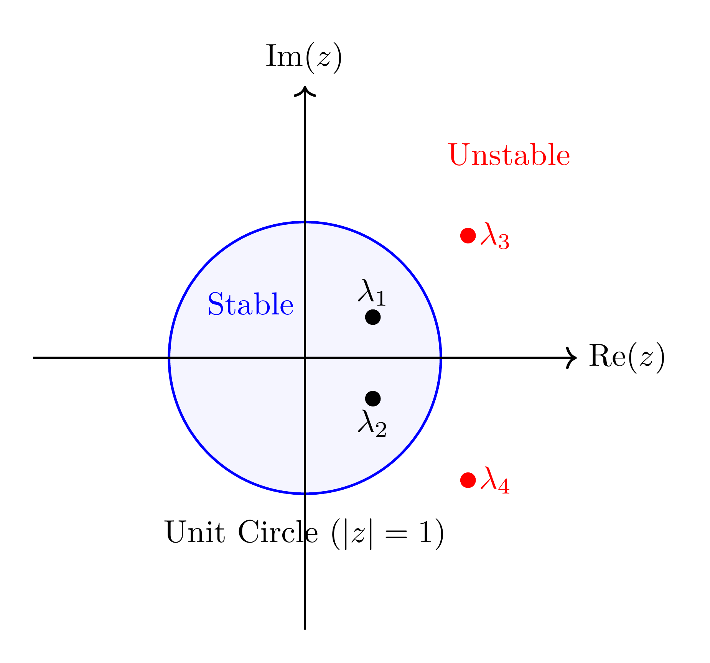

“The sciences do not try to explain, they hardly even try to interpret, they mainly make models. By a model is meant a mathematical construct which, with the addition of certain verbal interpretations, describes observed phenomena.”
— John von Neumann
The success of any Model Predictive Control strategy hinges on the quality of the controlled system’s internal model. To predict the future evolution of a system and optimise control actions, we require a mathematical representation that is both accurate enough to capture the relevant dynamics and computationally efficient enough to be solved in real-time.
While the physical world operates in continuous time and is inherently nonlinear, MPC algorithms typically run on digital processors in discrete time steps. Furthermore, to utilise fast convex solvers (such as Quadratic Programming), we often approximate these dynamics as linear systems. Therefore, the ability to translate physical laws into Linear Time-Invariant (LTI) state-space models and discretise them accurately is a fundamental prerequisite for MPC design.
In this chapter, we establish the mathematical modelling framework used by the predictive controllers developed in later chapters. We will cover:
A very short review of the Continuous-Time (CT) LTI state-space formulation.
Practical methods for deriving models of electrical and mechanical systems from first principles.
The concept of equilibrium points and local linearisation to approximate nonlinear dynamics.
Techniques for discretisation, including the analytic solution for linear systems (Zero-Order Hold) and numerical integration methods (Forward Euler, Runge-Kutta) for nonlinear systems.
An analysis of stability in the discrete-time domain.
In control theory, and particularly in Model Predictive Control (MPC), the state-space formulation provides the fundamental language for modelling dynamic systems. Rather than describing behaviour only through input–output relationships, the state-space approach characterises a system through a set of internal variables—called states—that capture the system’s stored energy, configuration, or memory.
The key idea is that, if the state of a system is known at a given time, together with future inputs, then its future evolution is fully determined. This property makes the state-space framework especially well suited to prediction-based control strategies such as MPC.
A general nonlinear continuous-time state-space model is compactly written as: \[\dot{x}(t) = f\big(x(t), u(t), t\big), \qquad y(t) = h\big(x(t), u(t), t\big).\] While this vector notation is elegant, it represents a system of coupled first-order differential equations. Explicitly expanding the vectors reveals the underlying structure:
\[\begin{equation} \underbrace{ \begin{bmatrix} \dot{x}_1(t) \\ \dot{x}_2(t) \\ \vdots \\ \dot{x}_n(t) \end{bmatrix} }_{\dot{x}(t)} = \underbrace{ \begin{bmatrix} f_1 \big( x_1(t), \dots, x_n(t), \, u_1(t), \dots, u_m(t), \, t \big) \\ f_2 \big( x_1(t), \dots, x_n(t), \, u_1(t), \dots, u_m(t), \, t \big) \\ \vdots \\ f_n \big( x_1(t), \dots, x_n(t), \, u_1(t), \dots, u_m(t), \, t \big) \end{bmatrix} }_{f(x(t), u(t), t)} \end{equation}\]
Similarly, the output equation relates the internal states to the measurable quantities:
\[\begin{equation} \underbrace{ \begin{bmatrix} y_1(t) \\ y_2(t) \\ \vdots \\ y_p(t) \end{bmatrix} }_{y(t)} = \underbrace{ \begin{bmatrix} h_1 \big( x_1(t), \dots, x_n(t), \, u_1(t), \dots, u_m(t), \, t \big) \\ h_2 \big( x_1(t), \dots, x_n(t), \, u_1(t), \dots, u_m(t), \, t \big) \\ \vdots \\ h_p \big( x_1(t), \dots, x_n(t), \, u_1(t), \dots, u_m(t), \, t \big) \end{bmatrix} }_{h(x(t), u(t), t)} \end{equation}\]
Here:
\(x_i(t)\) represents the \(i\)-th state variable (e.g., position, voltage).
\(u_j(t)\) represents the \(j\)-th control input (e.g., force, current).
\(f_i(\cdot)\) describes the dynamic evolution of the \(i\)-th state.
Nonlinear Modelling of a Simple Pendulum To illustrate the transition from physical laws to state-space equations, consider the classic simple pendulum system shown in Figure [fig:Pendulum], consisting of a mass \(m\) attached to a rigid, massless rod of length \(\ell\). The pivot is acted upon by an external control torque \(u(t)\) and a viscous friction coefficient \(b\).

1. Physical Laws
We apply Newton’s second law for rotational motion: \[\tau_{\text{net}} = I \ddot{\theta}\] where \(I = m\ell^2\) is the moment of inertia and \(\theta\) is the angular position measured from the vertical downward position. The torques acting on the system are:
Control Torque: \(+u(t)\) (applied at the pivot).
Gravity: \(-mg\ell \sin\theta\) (restoring torque).
Friction: \(-b \dot{\theta}\) (viscous damping opposing motion).
Substituting these into the equation of motion: \[m\ell^2 \ddot{\theta} = u(t) - mg\ell \sin\theta - b \dot{\theta}\] Solving for the angular acceleration \(\ddot{\theta}\): \[\begin{equation*} \ddot{\theta} = -\frac{g}{\ell} \sin\theta - \frac{b}{m\ell^2} \dot{\theta} + \frac{1}{m\ell^2} u(t) \end{equation*}\]
2. State-Space Formulation
To convert this second-order differential equation into first-order state-space form, we define the state variables: \[x_1(t) = \theta(t) \quad \text{(Angle)}, \qquad x_2(t) = \dot{\theta}(t) \quad \text{(Angular Velocity)}\] Taking the time derivative of the state vector: \[\begin{align*}
\dot{x}_1 &= \dot{\theta} = x_2 \\
\dot{x}_2 &= \ddot{\theta} = -\frac{g}{\ell} \sin x_1 - \frac{b}{m\ell^2} x_2 + \frac{1}{m\ell^2} u
\end{align*}\]
We can now write this explicitly in the vector form \(\dot{x} = f(x, u)\) introduced previously: \[\begin{equation} \underbrace{\begin{bmatrix} \dot{x}_1 \\[10pt] \dot{x}_2 \end{bmatrix}}_{\dot{x}(t)} = \underbrace{\begin{bmatrix} x_2 \\[10pt] -\dfrac{g}{\ell} \sin(x_1) - \dfrac{b}{m\ell^2} x_2 + \dfrac{1}{m\ell^2} u \end{bmatrix}}_{f(x, u)} \end{equation}\]
If our objective is to measure the angle, the output equation becomes: \[y(t) = \underbrace{\begin{bmatrix} 1 & 0 \end{bmatrix} \begin{bmatrix} x_1 \\ x_2 \end{bmatrix}}_{h(x)} = x_1\] This clearly demonstrates the nonlinear nature of the system, arising from the trigonometric term \(\sin(x_1)\) inside the vector function \(f\).
3. Linearisation (Small Angle Approximation)
While nonlinear models capture the full physics, they are computationally expensive to use in real-time optimisation. However, for many control applications, the pendulum operates near the vertical downward equilibrium (\(\theta = 0\)).
For small deviations from this equilibrium (\(|\theta| \ll 1\) rad), we can apply the small-angle approximation: \[\sin(\theta) \approx \theta \implies \sin(x_1) \approx x_1\] Substituting this into the nonlinear state equation for \(\dot{x}_2\), the dynamics become linear: \[\dot{x}_2 = -\frac{g}{\ell} x_1 - \frac{b}{m\ell^2} x_2 + \frac{1}{m\ell^2} u\] We can now rewrite the entire system in the standard LTI matrix form \(\dot{x} = Ax + Bu\): \[\begin{equation} \underbrace{\begin{bmatrix} \dot{x}_1 \\ \dot{x}_2 \end{bmatrix}}_{\dot{x}} = \underbrace{\begin{bmatrix} 0 & 1 \\ -\dfrac{g}{\ell} & -\dfrac{b}{m\ell^2} \end{bmatrix}}_{A} \underbrace{\begin{bmatrix} x_1 \\ x_2 \end{bmatrix}}_{x} + \underbrace{\begin{bmatrix} 0 \\ \dfrac{1}{m\ell^2} \end{bmatrix}}_{B} u \end{equation}\]
The output equation remains linear: \[\begin{equation} y = \underbrace{\begin{bmatrix} 1 & 0 \end{bmatrix}}_{C} x + \underbrace{\begin{bmatrix} 0 \end{bmatrix}}_{D} u \end{equation}\]
This yields the familiar state-space quadruplet \((A, B, C, D)\). Throughout the majority of this course, we will focus on systems that can be described by (or approximated by) such linear models, as they allow for the use of highly efficient convex optimisation solvers (e.g., Quadratic Programming).
Summary The state vector \(x(t)\) contains the minimal set of variables required to describe the system’s internal condition. Knowledge of \(x(t)\) at the current time allows prediction of future states and outputs, which is precisely the information required by MPC.
For linear time-invariant (LTI) systems, which form the backbone of most MPC formulations, the model reduces to \[\begin{align*} \dot{x}(t) &= A x(t) + B u(t) \\ y(t) &= C x(t) + D u(t), \end{align*}\] with constant matrices \(A\), \(B\), \(C\), and \(D\) formed by physical parameters of the system.
In practice, states are not abstract quantities: they usually correspond to physically meaningful variables associated with energy storage. Typical examples include:
Electrical: Currents in inductors and voltages across capacitors (magnetic and electric energy).
Mechanical: Positions and velocities of masses (potential and kinetic energy).
Process: Temperatures, pressures, or concentrations (thermal and chemical potential).
This interpretation provides a systematic way to construct models from first principles. Starting from physical laws—such as Kirchhoff’s laws in electrical systems or Newton’s laws in mechanical systems—we obtain differential equations whose natural variables become the system states.
Caveat: Intentionally incorporated states It is also common to extend the state vector with non-physical variables to improve control performance. For instance, to ensure the controller eliminates steady-state error (offset-free tracking), we often add an integrator state or a disturbance estimate to the model.
These are mathematical constructs rather than physical ones, yet they are treated identically within the state-space framework. We will explore these techniques in the upcoming chapters.
The importance of the state-space formulation in MPC can be summarised as follows:
Recursive Prediction: The state-space form (\(x_{k+1} = Ax_k + Bu_k\)) is inherently recursive. This allows the controller to compute the future evolution of the system over a horizon \(N\) simply by iterating matrix multiplications, which is computationally efficient for real-time optimisation.
Native MIMO Capability: Unlike transfer functions, which require complex coupling terms to model interactions, state-space models naturally accommodate Multi-Input Multi-Output (MIMO) systems via matrix dimensions. This is essential for industrial processes where inputs are rarely isolated.
Direct Constraint Handling: MPC is defined by its ability to respect limits. Physical bounds (e.g., valve positions or safety pressures) map directly onto simple linear inequalities involving the state and input vectors (\(Cx + Du \leq b\)), making them easy for standard solvers to process.
Systematic Discretisation: While physical laws are derived in continuous time (differential equations), digital controllers operate in discrete time (difference equations). State-space theory provides exact methods (such as the Zero-Order Hold) to convert continuous models into discrete forms without losing physical insight.
The state-space representation provides a modelling framework that connects physical intuition, mathematical analysis, and predictive control design. MPC relies on it directly.
In the following examples, we remind readers how to derive state-space models directly from physical principles in order to build intuition and highlight common modelling patterns.
State–Space Modelling of an RLC Circuit
Consider the electrical circuit shown in Figure [fig:RLC01], consisting of a voltage source \(V_i\), resistors \(R_1\) and \(R_2\), an inductor \(L\), and a capacitor \(C\). Write state equations in matrix form.
We select the energy variables as state variables: \[x_1 = i_L \quad \text{(inductor current)}, \qquad x_2 = v_C \quad \text{(capacitor voltage)},\] and take the input as \[u = v_i .\]
We begin with the constitutive relations of the energy–storage elements. Since the state variables are chosen as the inductor current and the capacitor voltage, all other variables are expressed in terms of these states and the input. \[\begin{align} v_L &= L \frac{d i_L}{dt}, \\ i_C &= C \frac{d v_C}{dt}. \end{align}\]
The current flowing through resistor \(R_2\) is given by Ohm’s law as \[i_{R_2} = \frac{v_L - v_C}{R_2}.\] Applying Kirchhoff’s Current Law (KCL) at node \(v_C\) and noting that the capacitor current equals the current through \(R_2\) yields \[C \dot{v}_C = \frac{v_L - v_C}{R_2}.\]
Applying KCL at node \(v_L\) yields \[\frac{v_i - v_L}{R_1} = i_L + \frac{v_L - v_C}{R_2}.\]
Solving for \(v_L\): \[v_L = \frac{R_2}{R_1 + R_2} v_i - \frac{R_1 R_2}{R_1 + R_2} i_L + \frac{R_1}{R_1 + R_2} v_C .\]
State equations. Substituting \(v_L\) into the inductor and capacitor equations gives \[\begin{align} \frac{d}{dt}{i}_L &= -\frac{R_1 R_2}{L(R_1 + R_2)} i_L + \frac{R_1}{L(R_1 + R_2)} v_C + \frac{R_2}{L(R_1 + R_2)} v_i, \\[6pt] \frac{d}{dt}{v}_C &= -\frac{R_1}{C(R_1 + R_2)} i_L -\frac{1}{C(R_1 + R_2)} v_C + \frac{1}{C(R_1 + R_2)} v_i. \end{align}\]
State–space representation. Defining the state vector \(x = [\, i_L \;\; v_C \,]^\top\), the system can be written compactly as \[\dot{x} = A x + B u,\] where \[A = \begin{bmatrix} -\dfrac{R_1 R_2}{L(R_1 + R_2)} & \dfrac{R_1}{L(R_1 + R_2)} \\[8pt] -\dfrac{R_1}{C(R_1 + R_2)} & -\dfrac{1}{C(R_1 + R_2)} \end{bmatrix}, \qquad B = \begin{bmatrix} \dfrac{R_2}{L(R_1 + R_2)} \\[8pt] \dfrac{1}{C(R_1 + R_2)} \end{bmatrix}.\]
Mass–Spring–Damper with External Forcing (State–Space Modelling) Question. A mass–spring–damper system shown in Figure [fig:MDS_system] is subjected to an external force input \(F(t)\). The displacement of the mass from equilibrium is denoted by \(\zeta(t)\) (positive to the right). The system parameters are mass \(m\), damping coefficient \(c\), and spring stiffness \(k\).

Write the equation of motion for the system in terms of \(\zeta(t)\), \(\dot{\zeta}(t)\), \(\ddot{\zeta}(t)\), and the input force \(F(t)\).
Choose a suitable state vector and write the continuous-time state-space model \[\dot{x}(t) = A x(t) + B u(t),\] clearly defining \(x(t)\) and \(u(t)\).
If the output is the displacement, i.e. \(y(t)=\zeta(t)\), write the output equation \[y(t) = C x(t) + D u(t).\]
1) Equation of motion: Let \(\zeta(t)\) denote the displacement of the mass from equilibrium (positive to the right), and let \(F(t)\) be the applied external force. By Newton’s second law, the sum of forces on the mass equals \(m\ddot{\zeta}(t)\). The spring force is \(-k\zeta(t)\) and the damper force is \(-c\dot{\zeta}(t)\). Hence, \[m\ddot{\zeta}(t) = F(t) - c\dot{\zeta}(t) - k\zeta(t),\] or equivalently, \[m\ddot{\zeta}(t) + c\dot{\zeta}(t) + k\zeta(t) = F(t).\]
2) Choice of states and state equations: Choose the standard second-order state variables \[x_1(t)=\zeta(t), \qquad x_2(t)=\dot{\zeta}(t), \qquad u(t)=F(t).\] Then \[\dot{x}_1(t) = x_2(t),\] and, from the equation of motion, \[\dot{x}_2(t)=\ddot{\zeta}(t) = -\frac{k}{m}x_1(t) - \frac{c}{m}x_2(t) + \frac{1}{m}u(t).\]
3) State-space form: Defining \(x(t)=\begin{bmatrix}x_1(t)\\x_2(t)\end{bmatrix}\), the system can be written as \[\dot{x}(t)=A x(t)+B u(t),\] with \[A= \begin{bmatrix} 0 & 1\\[4pt] -\dfrac{k}{m} & -\dfrac{c}{m} \end{bmatrix}, \qquad B= \begin{bmatrix} 0\\[4pt] \dfrac{1}{m} \end{bmatrix}.\]
4) Output equation. If the measured output is the displacement \(y(t)=\zeta(t)=x_1(t)\), then \[y(t)=C x(t)+D u(t),\] where \[C=\begin{bmatrix}1 & 0\end{bmatrix}, \qquad D=\begin{bmatrix}0\end{bmatrix}.\]
Many real-world systems are inherently nonlinear. Nonlinearities may arise from physical laws, geometric effects, saturation, friction, or actuator limits. While linear state-space models play a central role in MPC, they are often obtained as local approximations of an underlying nonlinear system.
In this section, we introduce nonlinear state-space models, define equilibrium points, and show how nonlinear dynamics can be approximated locally using Taylor expansion. This leads naturally to the concept of Jacobian linearisation.
A general nonlinear continuous-time system is described by \[\begin{align*} \dot{x}(t) &= f\big(x(t), u(t)\big) \\ y(t) &= h\big(x(t), u(t)\big), \end{align*}\] where the functions \(f(\cdot)\) and \(h(\cdot)\) are nonlinear mappings.
Unlike linear systems, nonlinear systems:
may have multiple equilibrium points,
exhibit behaviour that depends strongly on the operating point,
cannot, in general, be analysed using superposition.
For MPC design, it is common to operate the system near a desired steady state. Linearisation provides a systematic way to approximate the nonlinear dynamics locally around such an operating point.
An equilibrium point represents a state of operation where the system’s dynamic evolution ceases. If a system is initialised at an equilibrium state and the external inputs remain constant, the state will not change over time.
We distinguish between the definitions for continuous-time and discrete-time systems below.
Definition: Equilibrium Points 1. Continuous-Time Case:
For a continuous-time system \(\dot{x}(t) = f(x(t), u(t))\), an equilibrium point is a pair \((x_e, u_e)\) such that the time derivative vanishes: \[\begin{equation}
f(x_e, u_e) = 0
\end{equation}\]
2. Discrete-Time Case:
For a discrete-time system \(x_{k+1} = f(x_k, u_k)\), an equilibrium point is a pair \((x_e, u_e)\) such that the next state is identical to the current state (a fixed point): \[\begin{equation}
x_e = f(x_e, u_e)
\end{equation}\]
To find the equilibrium points for a given constant input \(u_e\), one must solve a set of algebraic equations:
Continuous: Solve the system of equations \(f(x, u_e) = 0\) for \(x\).
Discrete: Solve the fixed-point equation \(x - f(x, u_e) = 0\) for \(x\).
Note that nonlinear systems may have multiple equilibrium points, a single unique equilibrium, or no equilibrium points at all for a specific input.
In engineering contexts, equilibrium points are often referred to as operating points, trim points, or steady states. Physically, they correspond to:
Mechanical Systems: A position of rest (velocity and acceleration are zero) or motion at a constant velocity (acceleration is zero).
Thermal/Chemical Systems: A state where inflows equal outflows, resulting in constant temperature, pressure, or concentration.
Electrical Systems: A state where capacitor voltages and inductor currents have settled to constant DC values.
Ideally, a control system is designed to steer the dynamic system from an arbitrary initial state towards a desired equilibrium point \((x_{ref}, u_{ref})\).
To analyse system behaviour near an equilibrium, we approximate the nonlinear dynamics using a Taylor series expansion.
Consider a scalar nonlinear system \[\dot{x} = f(x,u),\] and let \((x_e,u_e)\) be an equilibrium point.
The first-order Taylor expansion of \(f(x,u)\) about \((x_e,u_e)\) is \[f(x,u) \approx f(x_e,u_e) + \frac{\partial f}{\partial x}\Big|_{(x_e,u_e)} (x-x_e) + \frac{\partial f}{\partial u}\Big|_{(x_e,u_e)} (u-u_e).\]
Since \(f(x_e,u_e)=0\) at equilibrium, this simplifies to \[\dot{x} \approx \frac{\partial f}{\partial x}\Big|_{(x_e,u_e)} (x-x_e) + \frac{\partial f}{\partial u}\Big|_{(x_e,u_e)} (u-u_e).\]
This expression describes a linear approximation of the nonlinear system near the equilibrium.
Now consider the nonlinear vector-valued system \[\dot{x} = f(x,u), \qquad x \in \mathbb{R}^n, \; u \in \mathbb{R}^m.\]
Expanding \(f(x,u)\) about the equilibrium \((x_e,u_e)\) yields \[f(x,u) \approx f(x_e,u_e) + \frac{\partial f}{\partial x}\Big|_{(x_e,u_e)} (x-x_e) + \frac{\partial f}{\partial u}\Big|_{(x_e,u_e)} (u-u_e).\]
Again using \(f(x_e,u_e)=0\), we obtain \[\dot{x} \approx A (x-x_e) + B (u-u_e),\] where the matrix \[A = \left.\frac{\partial f}{\partial x}\right|_{(x_e,u_e)} = \left[ \begin{array}{cccc} \dfrac{\partial f_1}{\partial x_1} & \dfrac{\partial f_1}{\partial x_2} & \cdots & \dfrac{\partial f_1}{\partial x_n} \\[8pt] \dfrac{\partial f_2}{\partial x_1} & \dfrac{\partial f_2}{\partial x_2} & \cdots & \dfrac{\partial f_2}{\partial x_n} \\[4pt] \vdots & \vdots & \ddots & \vdots \\[4pt] \dfrac{\partial f_n}{\partial x_1} & \dfrac{\partial f_n}{\partial x_2} & \cdots & \dfrac{\partial f_n}{\partial x_n} \end{array} \right]_{(x_e,u_e)}.\]
Note that each entry \(A_{ij}\) represents the sensitivity of the \(i\)th state equation to the \(j\)th state variable, evaluated at the equilibrium point.
Similarly, \[B = \left.\frac{\partial f}{\partial u}\right|_{(x_e,u_e)} = \left[ \begin{array}{cccc} \dfrac{\partial f_1}{\partial u_1} & \dfrac{\partial f_1}{\partial u_2} & \cdots & \dfrac{\partial f_1}{\partial u_m} \\[8pt] \dfrac{\partial f_2}{\partial u_1} & \dfrac{\partial f_2}{\partial u_2} & \cdots & \dfrac{\partial f_2}{\partial u_m} \\[4pt] \vdots & \vdots & \ddots & \vdots \\[4pt] \dfrac{\partial f_n}{\partial u_1} & \dfrac{\partial f_n}{\partial u_2} & \cdots & \dfrac{\partial f_n}{\partial u_m} \end{array} \right]_{(x_e,u_e)}.\]
Each entry \(B_{ij}\) quantifies how the \(j\)th input influences the \(i\)th state equation in the neighbourhood of the equilibrium.
With these matrices, the linearised dynamics in deviation variables \[\tilde{x} = x - x_e, \qquad \tilde{u} = u - u_e\] are given by \[\dot{\tilde{x}} = A \tilde{x} + B \tilde{u}.\]
If the output equation is nonlinear, \[y = h(x,u),\] a similar expansion gives \[\tilde{y} = C \tilde{x} + D \tilde{u},\] with \[C = \left.\frac{\partial h}{\partial x}\right|_{(x_e,u_e)}, \qquad D = \left.\frac{\partial h}{\partial u}\right|_{(x_e,u_e)}.\]
Nonlinear Planar Duorotor Question: The nonlinear dynamics of a planar duorotor (shown in Figure [fig:duorotor_model]) with mass \(m\), inertia \(J\), and arm length \(\ell\) are given by: \[\begin{align*} m\ddot{p}_x &= -(u_1+u_2)\sin(\theta) \\ m\ddot{p}_y &= (u_1+u_2)\cos(\theta) - mg \\ J\ddot{\theta} &= \frac{\ell }{2}(u_2 - u_1) \end{align*}\] where \(p_x\) is the horizontal position and \(p_y\) is the vertical position. Linearise these dynamics around the hover equilibrium (\(\theta=0, u_1=u_2=mg/2\)) to obtain an LTI state-space model, \(\dot{{x}} = A{x} + B{u}\).

1) Define states and inputs: We select the state vector such that the generalized coordinates appear first, followed by their velocities: \[x(t) = \begin{bmatrix} x_1 & x_2 & x_3 & x_4 & x_5 & x_6 \end{bmatrix}^\top = \begin{bmatrix} p_x & p_y & \theta & \dot{p}_x & \dot{p}_y & \dot{\theta} \end{bmatrix}^\top.\] The input vector is \(u = [\, u_1 \;\; u_2 \,]^\top\).
The nonlinear state-space equations \(\dot{x} = f(x,u)\) are: \[\begin{align*} \dot{x}_1 &= x_4, \\ \dot{x}_2 &= x_5, \\ \dot{x}_3 &= x_6, \\ \dot{x}_4 &= -\frac{1}{m}(u_1+u_2)\sin(x_3), \\ \dot{x}_5 &= \frac{1}{m}(u_1+u_2)\cos(x_3) - g, \\ \dot{x}_6 &= \frac{\ell}{2J}(u_2 - u_1). \end{align*}\]
2) Determine the equilibrium point: At hover, the drone is stationary at the origin with zero angle: \[x_e = [\, 0 \;\; 0 \;\; 0 \;\; 0 \;\; 0 \;\; 0 \,]^\top.\] Setting accelerations (\(\dot{x}_4, \dot{x}_5, \dot{x}_6\)) to zero:
From \(\dot{x}_5=0\): \(\dfrac{1}{m}(u_{1,e}+u_{2,e})\cos(0) - g = 0 \implies u_{1,e}+u_{2,e} = mg\).
From \(\dot{x}_6=0\): \(\dfrac{\ell}{2J}(u_{2,e}-u_{1,e}) = 0 \implies u_{1,e} = u_{2,e}\).
Thus, the equilibrium inputs are \(u_{1,e} = u_{2,e} = \dfrac{mg}{2}\).
3) Jacobian Linearisation: We compute the Jacobian matrices \(A = \dfrac{\partial f}{\partial x}\) and \(B = \frac{\partial f}{\partial u}\) evaluated at \((x_e, u_e)\).
For matrix \(A\): Rows 1–3 are purely kinematic (\(\dot{p} = v\)), resulting in an identity matrix in the top-right block. For rows 4–6, we check the derivatives with respect to the angle \(\theta\) (state \(x_3\)): \[\begin{align*} \frac{\partial \dot{x}_4}{\partial x_3} \bigg|_{eq} &= -\frac{u_{1,e}+u_{2,e}}{m}\cos(x_{3,e}) = -\frac{mg}{m}(1) = -g, \\ \frac{\partial \dot{x}_5}{\partial x_3} \bigg|_{eq} &= -\frac{u_{1,e}+u_{2,e}}{m}\sin(x_{3,e}) = -\frac{mg}{m}(0) = 0. \end{align*}\]
For matrix \(B\): We compute derivatives of the accelerations with respect to inputs \(u_1\) and \(u_2\): \[\begin{align*} \frac{\partial \dot{x}_4}{\partial u} \bigg|_{eq} &= -\frac{1}{m}\sin(x_{3,e}) = 0, \\ \frac{\partial \dot{x}_5}{\partial u} \bigg|_{eq} &= \frac{1}{m}\cos(x_{3,e}) = \frac{1}{m}. \end{align*}\] The angular acceleration \(\dot{x}_6\) remains linear in \(u\), with coefficients \(\mp \frac{\ell}{2J}\).
4) Final State-Space Model: Substituting these values, we obtain the linearized model \(\dot{\tilde{x}} = A \tilde{x} + B \tilde{u}\): \[A = \begin{bmatrix} 0 & 0 & 0 & 1 & 0 & 0 \\ 0 & 0 & 0 & 0 & 1 & 0 \\ 0 & 0 & 0 & 0 & 0 & 1 \\ 0 & 0 & -g & 0 & 0 & 0 \\ 0 & 0 & 0 & 0 & 0 & 0 \\ 0 & 0 & 0 & 0 & 0 & 0 \end{bmatrix}, \quad B = \begin{bmatrix} 0 & 0 \\ 0 & 0 \\ 0 & 0 \\ 0 & 0 \\ \dfrac{1}{m} & \dfrac{1}{m} \\[4pt] -\dfrac{\ell}{2J} & \dfrac{\ell}{2J} \end{bmatrix}.\] where \(\tilde{x} = x - x_e\) and \(\tilde{u} = u - u_e\).
For a homogeneous LTI system \(\dot{{x}} = {A}{x}\), the state at a future time \(t+\Delta t\) is given by: \[\begin{equation}
{x}(t+\Delta t) = e^{{A}\Delta t} {x}(t)
\end{equation}\] The term \(e^{{A}\Delta t}\) is the matrix exponential. It is not computed element-wise; rather, it is defined by the infinite Taylor series expansion: \[e^{{M}} = {I} + {M} + \frac{1}{2!}{M}^2 + \frac{1}{3!}{M}^3 + \cdots\] In MATLAB, this is computed efficiently using the expm() function.
This analytical solution gives us a way to exactly discretise a linear system. If we choose a fixed time step \(h = \Delta t\), the discrete-time dynamics are: \[\begin{equation} {x}_{k+1} = {A}_d {x}_k \quad \text{where} \quad {A}_d = e^{{A}h} \end{equation}\] This is fundamentally different from numerical integrators like Euler or RK4, which are approximations. For LTI systems, the matrix exponential provides the exact transition matrix \({A}_d\).
| Linear Systems | Nonlinear Systems |
|---|---|
| \(\dot{{x}} = {A}{x}\) | \(\dot{{x}} = {f}({x})\) |
| Can be solved exactly in closed form. | Almost never have closed-form solutions. |
| Discretised exactly using \(e^{{A}h}\). | Discretised approximately using numerical |
| integrators (Euler, RK4, ODE45, etc.). |
How do we discretise a forced system \(\dot{{x}} = {A}{x} + {B}{u}\)? The matrix exponential only applies to homogeneous systems (of the form \(\dot{{z}} = {T}{z}\)). We can use a clever trick: augment the state to absorb the input and then apply the matrix exponential.
First, we must assume something about how the control input \({u}(t)\) behaves between discrete time steps. The most common assumption is a Zero-Order Hold (ZOH), which means the control input is held constant over each time step: \[{u}(t) = {u}_k \quad \text{for} \quad t \in [t_k, t_{k+1})\] This is equivalent to stating that the derivative of the input is zero during the interval: \(\dot{{u}} = {0}\).
With the ZOH assumption, we can create an augmented state vector \({z} = [{x}^T, {u}^T]^T\). The dynamics of this new state are: \[\dot{{z}} = \begin{bmatrix} \dot{{x}} \\ \dot{{u}} \end{bmatrix} = \begin{bmatrix} {A}{x} + {B}{u} \\ {0} \end{bmatrix} = \underbrace{\begin{bmatrix} {A} & {B} \\ {0} & {0} \end{bmatrix}}_{{T}} \begin{bmatrix} {x} \\ {u} \end{bmatrix} = {T}{z}\] We now have a larger, but homogeneous, linear system. We can apply the matrix exponential to find its exact discrete-time solution: \[{z}_{k+1} = e^{{T}h} {z}_k \implies \begin{bmatrix} {x}_{k+1} \\ {u}_{k+1} \end{bmatrix} = e^{\begin{bmatrix} {A} & {B} \\ {0} & {0} \end{bmatrix}h} \begin{bmatrix} {x}_k \\ {u}_k \end{bmatrix}\] The matrix exponential of this block matrix has a special structure that gives us our final discrete-time system: \[e^{{T}h} = \begin{bmatrix} {A}_d & {B}_d \\ {0} & {I} \end{bmatrix}\] Expanding the equation for \({x}_{k+1}\) gives the standard discrete-time form: \[\begin{equation} \label{eqn:stateEquation} {x}_{k+1} = {A}_d {x}_k + {B}_d {u}_k \end{equation}\]
A = [0, 1; -5, -2]; % Example A matrix
B = [0; 1]; % Example B matrix
h = 0.1; % Time step
n = size(A, 1); % Number of states
m = size(B, 2); % Number of inputs
% Form the augmented matrix T
T = [A, B;
zeros(m, n), zeros(m, m)];
% Compute the matrix exponential of T*h
M = expm(T * h);
% Extract the discrete-time matrices Ad and Bd
Ad = M(1:n, 1:n);
Bd = M(1:n, n+1:end);
disp('Ad = '); disp(Ad);
disp('Bd = '); disp(Bd);In the previous sections, we established that Linear Time-Invariant (LTI) systems can be discretised exactly using the matrix exponential (\(e^{Ah}\)). However, the majority of physical systems—such as robotic arms, chemical reactors, and aerial vehicles—are inherently nonlinear: \[\dot{x}(t) = f(x(t), u(t)).\] For these systems, a closed-form solution for \(x(t)\) rarely exists. To implement MPC, or to simulate these systems on a computer, we must approximate the continuous-time evolution using numerical integration methods.
In digital control, we typically assume a Zero-Order Hold (ZOH) on the input, meaning the control input is held constant over the sampling interval \(h\): \[u(t) = u_k \quad \text{for} \quad t \in [t_k, t_{k+1}).\]
The simplest numerical approach is the Forward Euler method, which approximates the derivative as a constant slope evaluated at the beginning of the interval. It is derived from the first-order truncation of the Taylor series: \[\begin{equation} x_{k+1} = x_k + h \cdot f(x_k, u_k). \end{equation}\]
While Euler’s method is algebraically simple and easy to differentiate (which is useful for optimization gradients), it suffers from significant drawbacks.
Warning: Avoid Euler’s Method Forward Euler is a first-order method, meaning the global error scales linearly with the step size (\(\mathcal{O}(h)\)). It is notoriously inaccurate and numerically unstable for stiff systems (systems with fast dynamics).
Using Euler’s method can introduce artificial energy into the simulation, causing stable physical systems to appear unstable (blow up) unless the time step \(h\) is chosen to be infinitesimally small. For this reason, Forward Euler should generally be avoided for accurate simulation of physical plants.
The standard workhorse for engineering simulation is the 4th-order Runge–Kutta (RK4) method. Rather than relying on a single slope calculation, RK4 takes a weighted average of four slopes calculated at different points within the time step.
Given the current state \(x_k\), input \(u_k\), and time step \(h\), the update is calculated as follows: \[\begin{align*} k_1 &= f(x_k, u_k) \nonumber \\ k_2 &= f\left(x_k + \frac{h}{2} k_1, u_k\right) \nonumber \\ k_3 &= f\left(x_k + \frac{h}{2} k_2, u_k\right) \nonumber \\ k_4 &= f(x_k + h k_3, u_k) \nonumber \\ x_{k+1} &= x_k + \frac{h}{6} (k_1 + 2k_2 + 2k_3 + k_4). \end{align*}\] The RK4 method has a global error of \(\mathcal{O}(h^4)\), providing a significantly higher degree of accuracy and stability than Euler’s method for the same time step.
MATLAB Implementation: RK4 Integrator A robust implementation of a single RK4 step in MATLAB for a generic nonlinear system:
function x_next = rk4_step(f_dynamics, x_curr, u_curr, h)
% f_dynamics: Function handle @(x,u) ...
% x_curr: Current state vector [n x 1]
% u_curr: Current input vector [m x 1]
% h: Time step (dt)
k1 = f_dynamics(x_curr, u_curr);
k2 = f_dynamics(x_curr + 0.5*h*k1, u_curr);
k3 = f_dynamics(x_curr + 0.5*h*k2, u_curr);
k4 = f_dynamics(x_curr + h*k3, u_curr);
x_next = x_curr + (h/6)*(k1 + 2*k2 + 2*k3 + k4);
endComparison of Numerical Integrators: The Harmonic Oscillator System Description
Consider a simple undamped mass-spring system (harmonic oscillator) with mass \(m=1\) and spring constant \(k=1\). The equation of motion is: \[\ddot{p}(t) + p(t) = 0\] We define the state vector \(x = [x_1, x_2]^\top = [p, \dot{p}]^\top\). The continuous-time dynamics \(\dot{x} = f(x)\) are: \[\frac{d}{dt} \begin{bmatrix} x_1 \\ x_2 \end{bmatrix}
=
\begin{bmatrix} x_2 \\ -x_1 \end{bmatrix}.\] The exact analytical solution for an initial condition \(x_0 = [1, 0]^\top\) is a perfect sinusoid, \(x_1(t) = \cos(t)\), which represents a circle in the phase plane (energy is conserved).
1. Forward Euler Discretisation
Applying the Euler update law \(x_{k+1} = x_k + h f(x_k)\) yields: \[\begin{align*}
x_{1, k+1} &= x_{1,k} + h \cdot x_{2,k} \\
x_{2, k+1} &= x_{2,k} - h \cdot x_{1,k}
\end{align*}\] Notice that the new state depends linearly on the current slope.
2. Runge–Kutta 4 (RK4) Discretisation
Applying the RK4 method requires four evaluations of the dynamics function \(f(x)\) per step: \[\begin{align*}
k_1 &= f(x_k) \\
k_2 &= f(x_k + 0.5 h k_1) \\
k_3 &= f(x_k + 0.5 h k_2) \\
k_4 &= f(x_k + h k_3)
\end{align*}\] \[x_{k+1} = x_k + \frac{h}{6}(k_1 + 2k_2 + 2k_3 + k_4).\]
Simulation Results
Figure 1.1 compares these two methods against the exact solution across different sampling times \(h\).
It can be observed that the Forward Euler method is numerically unstable for every selection of sampling time \(h\); it introduces artificial energy into the system, causing the amplitude to grow unbounded (spiralling out) as time progresses. In contrast, the RK4 method maintains high accuracy and preserves stability even at larger time steps.

The dynamics of a discrete-time system can be viewed as an iterated map: \[{x}_{k+1} = {f}_d({x}_k).\] An equilibrium point \({x}^*\) satisfies \({f}_d({x}^*) = {x}^*\). To analyze the local stability of \({x}^*\), we linearize the dynamics around this point: \[\delta {x}_{k+1} \approx {A}_d \delta {x}_k, \quad \text{where} \quad {A}_d = \left. \frac{\partial {f}_d}{\partial {x}} \right|_{{x} = {x}^*}.\]
Discrete-Time Stability Condition The equilibrium point \({x}^*\) is (locally) asymptotically stable if and only if all eigenvalues of \({A}_d\) lie strictly inside the unit circle in the complex plane: \[\begin{equation*} |\lambda_i({A}_d)| < 1 \quad \forall i. \end{equation*}\]
For linear systems \({x}_{k+1} = {A}_d {x}_k\), this condition is both necessary and sufficient.
Unlike continuous-time systems, where stability is defined by the Left Half Plane (LHP), discrete-time stability is determined by the Unit Circle. The mapping between the two domains is governed by the relation \(z = e^{sh}\), where \(h\) is the sampling time. Figure 1.2 shows an unstable system having 4 eigenvalues.
Stable: Eigenvalues lie strictly inside the unit circle (\(|\lambda| < 1\)). The state vector decays to zero.
Unstable: At least one eigenvalue lies outside the unit circle (\(|\lambda| > 1\)). The state vector grows unbounded.
Marginally Stable: Eigenvalues lie on the unit circle (\(|\lambda| = 1\)). The system may oscillate or remain constant, but does not decay.

While eigenvalue analysis is useful for linear analysis, a more general approach—fundamental to optimal control—is the Lyapunov method. Instead of looking at roots of a polynomial, we look at the system’s "energy".
For a linear discrete-time system \(x_{k+1} = A x_k\), let us define a quadratic energy candidate function: \[\begin{equation} V(x_k) = x_k^\top P x_k \end{equation}\] where \(P\) is a symmetric, positive definite matrix (\(P \succ 0\)). For the system to be stable, this energy must decrease at every time step (\(V(x_{k+1}) < V(x_k)\)).
Substituting the dynamics into the energy difference yields: \[\begin{align*} V(x_{k+1}) - V(x_k) &= x_{k+1}^\top P x_{k+1} - x_k^\top P x_k \\ &= (A x_k)^\top P (A x_k) - x_k^\top P x_k \\ &= x_k^\top (A^\top P A - P) x_k \end{align*}\] For the energy to decrease strictly, the term in the brackets must be negative definite. This leads to the Discrete Lyapunov Equation, also known as the Stein Equation.
Lyapunov Stability Theorem The discrete-time linear system \(x_{k+1} = A x_k\) is asymptotically stable if and only if, for any given positive definite matrix \(Q \succ 0\), there exists a unique positive definite matrix \(P \succ 0\) satisfying: \[\begin{equation*} A^\top P A - P = -Q \end{equation*}\]
Connection to LQR This equation is not just a stability check; it is the foundation of the Linear Quadratic Regulator. In LQR, we essentially look for a control law that shapes the matrix \(A_{cl} = (A-BK)\) such that this energy-decrease condition is satisfied optimally.
Transfer Function to State-Space Conversion. A system is described by the transfer function \[G(s) = \frac{s + 3}{s^3 + 4s^2 + 6s + 4}.\]
Convert \(G(s)\) into a continuous-time state-space representation \(\dot{x} = Ax + Bu\), \(y = Cx + Du\) using the controllable canonical form. Clearly state the matrices \(A\), \(B\), \(C\), and \(D\).
Verify that \(D = 0\) and explain, in terms of the degrees of numerator and denominator, why this is the case.
Matrix Exponential Computation. Consider the continuous-time system \(\dot{x} = Ax\) with \[A = \begin{bmatrix} 0 & 1 \\ 0 & 0 \end{bmatrix}.\]
Using the Taylor series definition \(e^{M} = I + M + \frac{1}{2!}M^2 + \frac{1}{3!}M^3 + \cdots\), compute \(e^{Ah}\) analytically by first evaluating \(A^2\), \(A^3\), etc.
For the initial condition \(x(0) = [\,1 \;\; 2\,]^\top\), write the closed-form expression for \(x(t)\).
Now let \(A = \begin{bmatrix} -1 & 0 \\ 0 & -3 \end{bmatrix}\). Compute \(e^{Ah}\) and comment on how the diagonal structure simplifies the computation.
Zero-Order Hold Discretisation. A mass–spring–damper system with mass \(m = 1\,\text{kg}\), damping coefficient \(c = 2\,\text{Ns/m}\), and spring stiffness \(k = 5\,\text{N/m}\) has the continuous-time state-space model \[\dot{x} = \begin{bmatrix} 0 & 1 \\ -5 & -2 \end{bmatrix} x + \begin{bmatrix} 0 \\ 1 \end{bmatrix} u, \qquad y = \begin{bmatrix} 1 & 0 \end{bmatrix} x.\]
Form the augmented matrix \(T = \begin{bmatrix} A & B \\ 0 & 0 \end{bmatrix}\) and explain why computing \(e^{Th}\) yields the exact discrete-time matrices \(A_d\) and \(B_d\) under a ZOH assumption.
Using MATLAB (or by hand for bonus practice), compute \(A_d\) and \(B_d\) for a sampling time \(h = 0.1\,\text{s}\).
Write the resulting discrete-time state-space model \(x_{k+1} = A_d x_k + B_d u_k\) and the output equation \(y_k = C_d x_k\).
Deviation Variables and Linearisation. Consider the nonlinear system describing a continuously stirred tank reactor (CSTR): \[\dot{x}_1 = -x_1 + D_a(1 - x_1)\exp\!\left(\frac{x_2}{1 + x_2/\gamma}\right), \qquad \dot{x}_2 = -(1+\beta)x_2 + D_a B(1 - x_1)\exp\!\left(\frac{x_2}{1 + x_2/\gamma}\right) + \beta\, u,\] where \(x_1\) is the dimensionless concentration, \(x_2\) is the dimensionless temperature, \(u\) is the coolant temperature, and \(D_a\), \(B\), \(\beta\), \(\gamma\) are positive parameters.
Suppose an equilibrium \((x_{1,e},\, x_{2,e},\, u_e)\) has been found numerically. Write the general expressions for the Jacobian matrices \(A = \dfrac{\partial f}{\partial x}\Big|_{(x_e, u_e)}\) and \(B = \dfrac{\partial f}{\partial u}\Big|_{(x_e, u_e)}\).
Define the deviation variables \(\tilde{x} = x - x_e\) and \(\tilde{u} = u - u_e\), and write the linearised model \(\dot{\tilde{x}} = A\tilde{x} + B\tilde{u}\).
Explain why the linearised model is only valid in a neighbourhood of \((x_e, u_e)\) and what happens to its accuracy as \(\|\tilde{x}\|\) and \(\|\tilde{u}\|\) increase.
Eigenvalue Analysis for Stability. Consider the discrete-time system \(x_{k+1} = A_d x_k\) with \[A_d = \begin{bmatrix} 0.5 & 0.3 \\ -0.2 & 0.4 \end{bmatrix}.\]
Compute the eigenvalues of \(A_d\) by solving \(\det(A_d - \lambda I) = 0\).
Determine whether the system is asymptotically stable by checking the discrete-time stability condition \(|\lambda_i(A_d)| < 1\) for all \(i\).
Now consider the modified system matrix \(A_d' = \begin{bmatrix} 0.8 & 0.6 \\ -0.6 & 0.8 \end{bmatrix}\). Compute the eigenvalues of \(A_d'\) and determine whether the system is stable, unstable, or marginally stable. Sketch the location of the eigenvalues relative to the unit circle in the \(z\)-plane.
From Physics to Discrete-Time Model (Combined Exercise). An electrical circuit consists of a single resistor \(R\) in series with an inductor \(L\), driven by a voltage source \(v_i(t)\). The current through the inductor is \(i_L(t)\).
Using Kirchhoff’s voltage law, derive the first-order differential equation governing \(i_L(t)\).
Write the continuous-time state-space model with \(x = i_L\) and \(u = v_i\), identifying the scalars \(A\), \(B\), \(C\), and \(D\) (assume the output is the inductor current).
Compute the exact ZOH discrete-time model \(x_{k+1} = A_d x_k + B_d u_k\) analytically. Hint: For a scalar system, \(A_d = e^{Ah}\) and \(B_d = \int_0^h e^{A\tau}\,d\tau \cdot B\).
Compute the eigenvalue of \(A_d\) and determine the condition on \(R\), \(L\), and \(h\) for which the discrete-time system is stable.